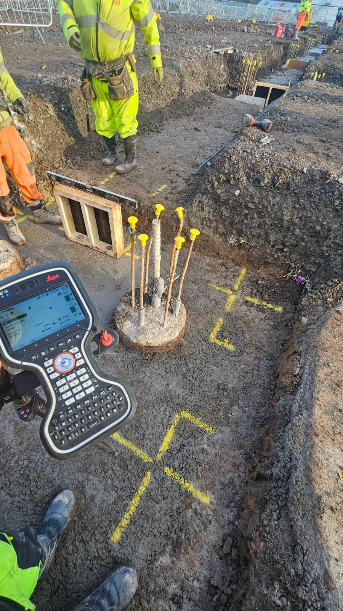
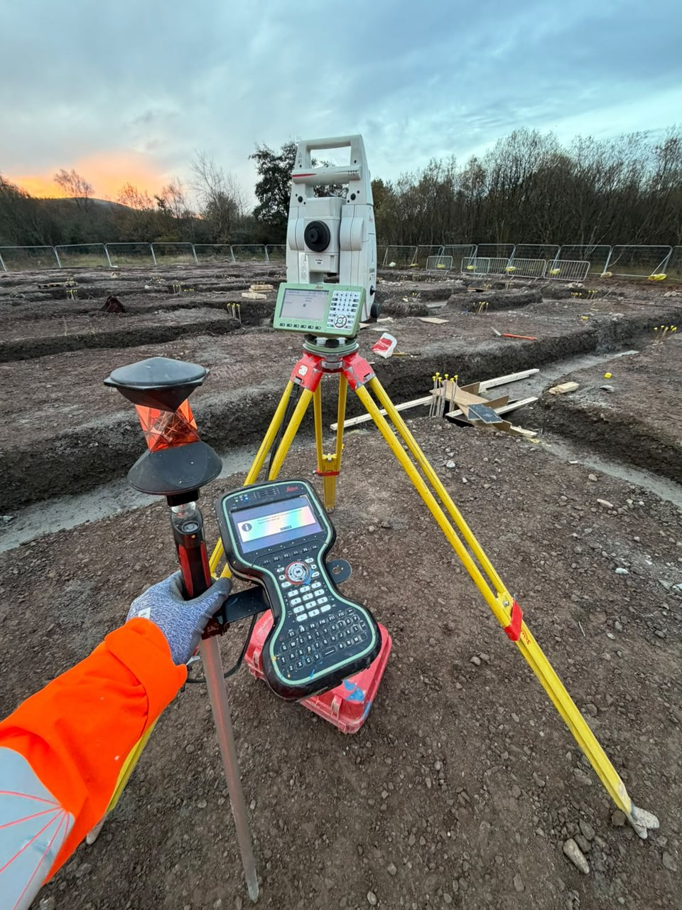
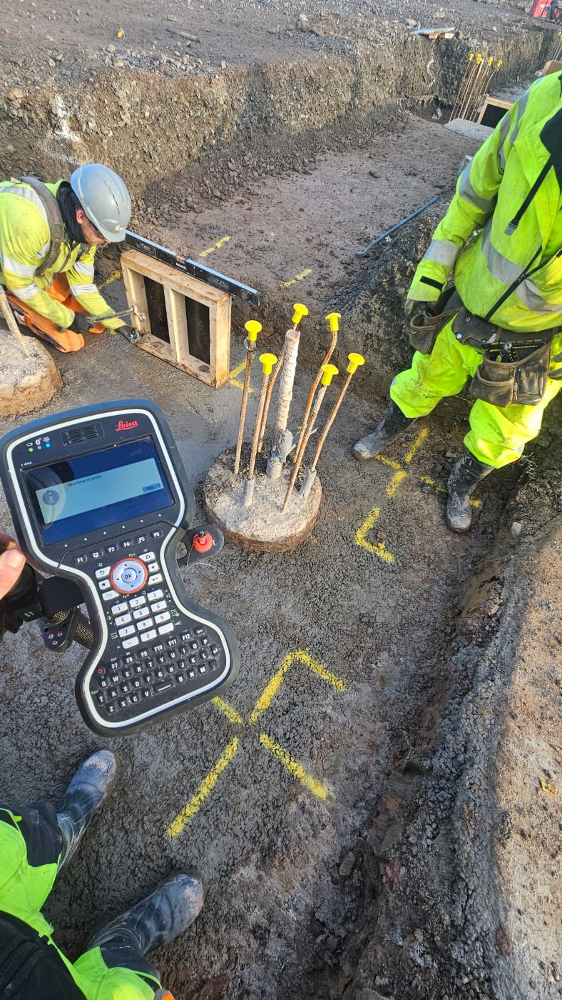

CAD & Digital Survey Services
Survey data turned into drawings, models and files your design team and plant can use.



Our CAD and digital services
Ryan turns checked site measurements and approved designs into drawings and data in the format you need, so your designers, site team and machine operators work from the same information.
Clean 2D and 3D CAD drawings, surface models, machine control files and digital records, prepared from checked survey data and approved design drawings.
- 2D & 3D AutoCAD, terrain & surface models2D and 3D AutoCAD drawings, digital terrain models (DTMs) and surface models prepared from checked field data.
- Machine control models & LandXML / DXFMachine control design models, plus LandXML and DXF files (common CAD exchange formats) for earthworks plant and site teams.
- Sections, volumes & isopachyte drawingsCross-sections and long sections, volume calculations and isopachyte drawings from checked survey data.
- As-builts, coordinates & survey reportsAs-built drawings, coordinate schedules and setting-out data, plus digital survey reports and construction records.
See the full list (10)
- 2D and 3D AutoCAD drawings
- Digital terrain models and surface modelling
- LandXML and DXF data preparation
- Survey data processing and verification
- Cross-sections and longitudinal sections
- Volume calculations and isopachyte drawings
- Machine control design models
- As-built drawing production
- Coordinate schedules and setting-out data
- Digital survey reports and construction records
What to send Ryan
You don’t need all of this before getting in touch. Send what you have and Ryan will plan and price the job from there.
Not sure what you’ve got? Call 07956 996 424 and talk it through.
- The site address or postcodeWhere the job is.
- The data or drawings you haveSurvey files, DWG, DXF, LandXML or PDF.
- What the output is forDesign, machine control, records or a report.
- The format you need backFile type, or which machine control system the plant uses.
- When you need itRough dates are fine.
Discuss your drawings with Ryan
Call or email Ryan Johnston directly, or send an enquiry with this service already selected.
07956 996 424 ryan@rgcivilengineering.co.uk